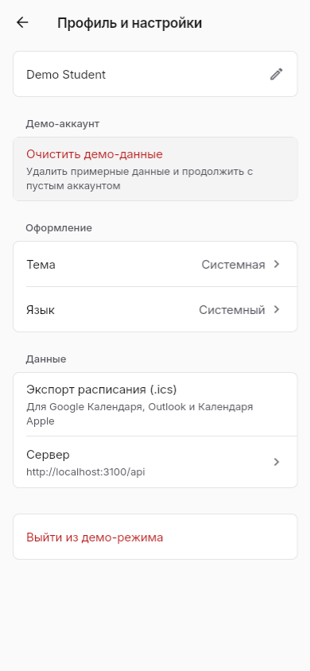
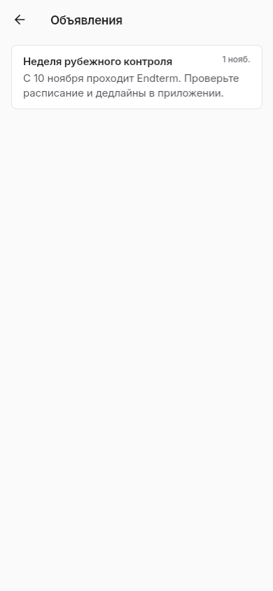
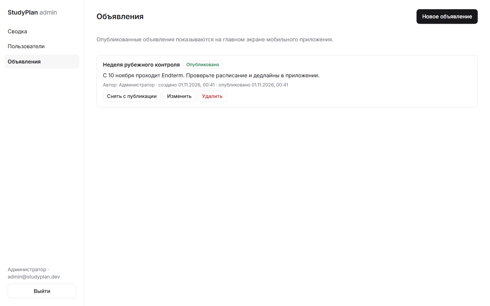

| ID | CR-01 |
|---|---|
| Сценарий | (г) удаление персональных данных по запросу |
| Формулировка | Пользователь может сам удалить аккаунт. После удаления на сервере не остаётся его почты, имени, пароля, задач, пар и загруженных им файлов. |
| Причина | Закон РК «О персональных данных и их защите»: человек вправе потребовать удалить свои данные. Сейчас удалить аккаунт может только администратор вручную. |
| Инициатор | Преподаватель (заказчик) |
| Что меняется | Изменение |
|---|---|
| Требования | Новые FR-19, FR-20, FR-21 и NFR-11 (см. ниже). Меняется FR-14: у файлов удалённого пользователя пропадает автор. Меняется NFR-03: удалённые данные не должны отдаваться никому. |
| Компоненты | К8 Авторизация — новый маршрут DELETE /api/auth/me с повторным вводом пароля. К9 Sync — не принимать записи от удалённого пользователя. К10 Материалы — удалить файлы с диска. К1 Интерфейс — кнопка «Удалить аккаунт» в профиле с подтверждением. К4/К3 — после удаления очистить локальную базу. К12 Админ-панель — журнал удалений. |
| Данные | Новая сущность «Запрос на удаление» (id, дата, результат; без почты и имени). Каскадное удаление: пользователь → предметы, пары, задачи, подзадачи, курсы и события LMS, свои материалы. Групповые задачи, которые видят другие, остаются, но без ссылки на автора. |
| Сроки | +14 часов: сервер 6 ч, приложение 4 ч, тесты 4 ч. В WBS добавляются задачи 1.8 и 3.8. |
| Риски | Р7: удаление по ошибке — повторный ввод пароля и подтверждение. Р8: другое устройство пользователя пришлёт старые данные — сервер отвечает 401 на токены удалённого аккаунта. Р9: группа теряет общие задачи — групповые задачи не удаляются. |
| ID | Требование | Приоритет | Критерий приёмки |
|---|---|---|---|
| FR-19 | Удаление своего аккаунта из профиля | Высокий | После подтверждения паролем вход с этой почтой невозможен |
| FR-20 | Удаление всех личных записей и файлов пользователя на сервере | Высокий | В базе нет строк с его user_id, файлов на диске нет |
| FR-21 | Очистка локальной базы после удаления | Средний | После удаления приложение открывается пустым в гостевом режиме |
| NFR-11 | Удаление выполняется в одной транзакции | Высокий | При ошибке ничего не удаляется частично (автотест) |
| ID | Версия | Содержание и причина | Влияние | Решение |
|---|---|---|---|---|
| — | 0.9 → 1.0 | Убран чат группы (FR-15/16 старой версии): задания и так приходят через «Для группы», чат дублировал мессенджер | Минус Socket.IO и 2 экрана | Принято |
| — | 0.9 → 1.0 | Убрана роль «староста»: все участники группы равны, публиковать задание может любой (риск «староста забудет») | Проще матрица прав | Принято |
| CR-01 | 1.0 → 1.1 | Удаление персональных данных по запросу (закон о ПДн) | К1, К3, К4, К8–К10, К12; +14 ч; риски Р7–Р9 | Принято |
| Потребность | Требование | Компонент | Критерий приёмки |
|---|---|---|---|
| П1 | FR-05 | К1, К2, К3 | Пары на сегодня по времени |
| П1 | FR-15 | К3 | В режиме «В самолёте» всё открывается |
| П1 | NFR-06 | К1, К3 | Запуск <1,5 с |
| П2 | FR-10 | К1, К3 | Поля задачи сохраняются |
| П2 | FR-16 | К4, К5, К9 | Офлайн-правка доходит до второго устройства |
| П2 | NFR-05 | К9 | Побеждает более поздняя правка |
| П3 | FR-08 | К2 | Пара чётной недели скрыта в нечётную |
| П4 | FR-04 | К8 | Вход в группу по коду |
| П4 | FR-12 | К4, К9 | Задача появилась у всей группы |
| П4 | NFR-03 | К7, К9 | Запись в чужую группу отклонена |
| П5 | NFR-09 | К1 | Сборка под Windows запускается |
| П6 | FR-14 | К10 | Файл скачивается другим участником |
| П7 | FR-17 | К4, К1 | Значок показывает статус |
| П8 | Объявления (FR-22*) | К11, К12 | Опубликованное объявление видно на главной |
| П2 | NFR-02 | К7 | Без токена — 401 |
| CR-01 | FR-19, FR-20 | К8, К10, К13 | Нет строк и файлов пользователя |
| CR-01 | NFR-11 | К8 | Нет частичного удаления |
*FR-22 «Объявления от администратора без флуда» добавлено в 1.1, чтобы закрыть потребность П8.
Показать прототип (приложение на телефоне) трём участникам исследования. Задание участнику: найти пару на завтра, создать задачу для группы, отключить интернет и открыть задачу.
Заполняется по итогам реальной встречи. Если участник ничего не предложил, в колонке «Решение» пишется отказ с причиной.
| Участник | Дата | Что сказал / где запнулся | Корректировка или отказ (с причиной) |
|---|---|---|---|
| И-1 | |||
| И-2 | |||
| И-3 |

Профиль (сюда — «Удалить аккаунт»)
Объявления (FR-22)
Админ-панель: объявленияПроверял по чек-листу: имена и источники совпадают во всех неделях; у каждого FR есть источник и критерий; требования не противоречат архитектуре; цифры подтверждены данными; выполнены минимальные объёмы задания.
| № | Найденный недочёт | Исправление |
|---|---|---|
| 1 | В неделе 1 одни и те же цитаты были подписаны разными именами (раздел 3 и раздел 4) | Оставлена одна таблица интервью с кодами И-1…И-3; портреты недели 2 переписаны по ним |
| 2 | Требования про чат и Socket.IO остались, хотя чат убран | FR пересобраны, чат удалён из WBS и глоссария |
| 3 | Требования «только староста» противоречили модели группы, где все равны | US-02, FR-12, ограничение 3 и риск 6 переписаны |
| 4 | Проценты (67%, 87%) не опирались на таблицы анкеты | Выводы ссылаются на таблицы частот 1–4 |
| 5 | Было указано одно ограничение выборки вместо двух | Добавлено второе ограничение |
| 6 | Платформы указаны только Android и Windows, а проект собирается и для Web, iOS | Таблица аналогов и NFR-09 исправлены |
| 7 | Свайпы (старый FR-13) и экспорт schedule.json не реализуются в выбранном решении | Заменены на фильтры задач и экспорт в .ics |
npm test) и приложения (flutter test) — старые требования покрыты тестами.Архитектура выдержала новое требование: изменения затронули 7 компонентов, но не потребовали менять сам подход. Удаление встраивается в существующую авторизацию и транзакции сервера. Главный риск — удаление по ошибке — закрыт подтверждением паролем.
Использованные инструменты: Flutter, Node.js, VS Code, Google Forms. Помощь ИИ (Claude) — при оформлении документов; данные исследования собраны лично.